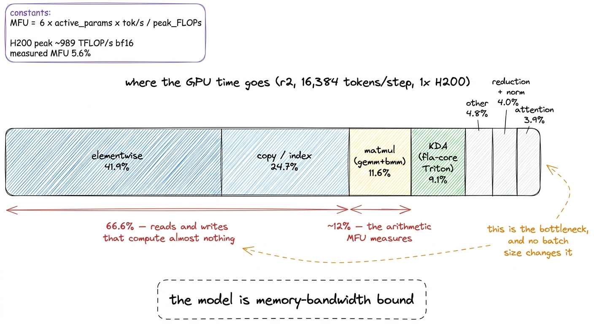
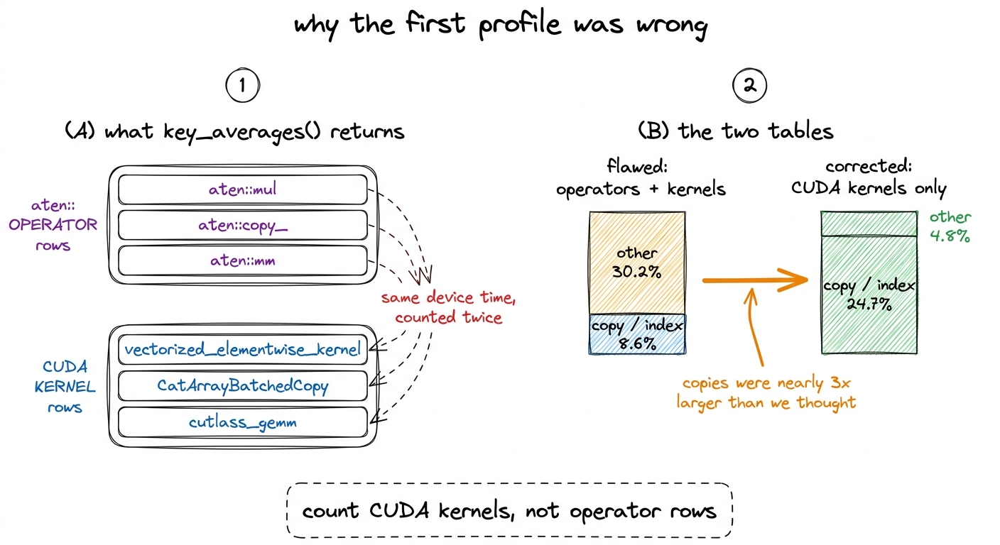
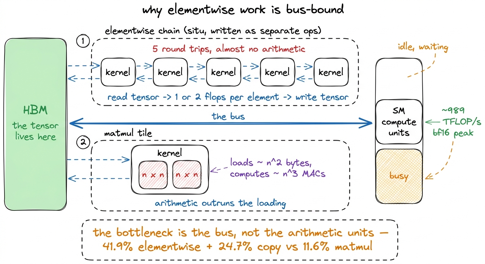
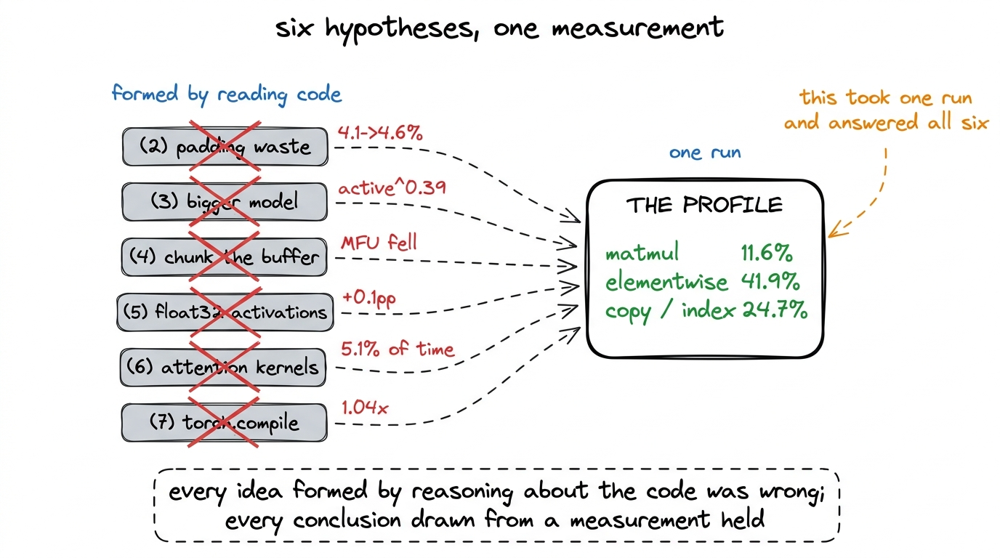
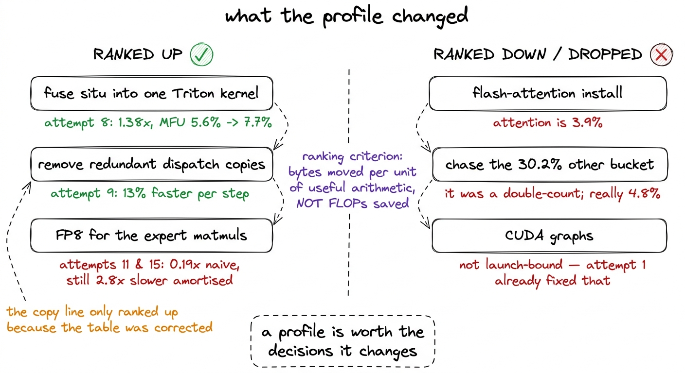

The profile: only 12% of the time is arithmetic
Grouping every CUDA kernel by which part of the model it belongs to, the double-counting mistake in the first version of the table, and what memory-bandwidth-bound means for every lever available.
By the time we ran the profiler we had already spent five numbered attempts on the throughput problem, and the fifth one was the warning. Recomputing situ's intermediates in the backward pass, rather than saving them in float32 through the forward, freed 40 GB of memory, which is what the arithmetic predicted. That memory bought a 50% larger microbatch, from 16,384 to 24,576 tokens per step. The larger microbatch moved MFU by 0.1 percentage points.
Earlier in the investigation the levers had moved MFU in whole multiples. Attempt 1, replacing the sequential expert loop with batched matrix multiplies, took MFU from 0.1% to 4.1%. Now a 50% larger microbatch bought essentially nothing. A lever that stops responding has stopped being the constraint, and there was no further reading of the code that would tell us what the new constraint was.
So we stopped forming hypotheses and measured where the GPU time was going.
The table
We ran the PyTorch profiler on r2, the rung above ours, at 16,384 tokens per step on one H200, and grouped every CUDA kernel by which part of the model it belongs to.1 r2 is 2.93B total / 307M active. Almost all of the MFU investigation was measured there rather than on r1, because r2 was the largest rung that still fits comfortably on a single H200 with room to sweep batch sizes. r1, the model this book is about, trained at 131,072 tokens per step; the 16,384 figure here is a benchmark-harness setting, not the run's.
| area | share of GPU time |
|---|---|
| elementwise | 41.9% |
| copy / index | 24.7% |
| matmul (gemm and bmm) | 11.6% |
| KDA (fla-core Triton) | 9.1% |
| other | 4.8% |
| reduction and normalisation | 4.0% |
| attention | 3.9% |
The individual kernels say the same thing from a different angle. aten::mul is 10.2% of GPU time. aten::copy_ is 8.6%. Vectorized elementwise kernels are 4.2%. aten::mm, an actual matrix multiplication, is 3.9%.
Only about 12% of GPU time is matrix multiplication.
Elementwise operations and copies together are 66.6%. Those are the two categories that read a tensor, do very little with it, and write it back. Roughly 88% of the time, the card we were renting at $4.54 per hour was not doing the arithmetic that MFU measures.

figure rendering · Every CUDA kernel in a training step, grouped by which part of the modThe first version of this table was wrong
That table is the corrected one. The first version we produced reported an unexplained 30.2% "other" bucket and put copies at 8.6%, and we very nearly acted on it. It was the second-largest entry in the profile, we did not know what was in it, and the plan written down at the time began with an item that read, in effect, find out what "other" is.
The mistake was in how the rows were summed. PyTorch's key_averages() returns two kinds of row in the same list. There are aten:: operator entries, which are the operations your model code calls, and there are CUDA kernel entries, which are what those operators launch on the device. A single aten::mul may dispatch one vectorized elementwise kernel, and both the operator and the kernel appear as rows carrying the same device time. Summing the list adds that time twice.

figure rendering · The double-count, and what it hid. The corrected table counts CUDA kerThe corrected table counts CUDA kernels only, and the correction was not cosmetic. Copies moved from 8.6% to 24.7% and became the second-largest line in the profile. The unexplained 30.2% bucket dropped to 4.8%, which is small enough to stop worrying about.2 The individual aten::copy_ row is still 8.6% in the corrected list of top kernels. The area is 24.7% because the copy and index group holds many kernels besides that one — gathers, scatters, cat copies, dtype conversions — and the flawed table had only ever been reading the single largest of them.
That single correction redirected the next month of work. A profile that says copies are 8.6% invites you to leave them alone. A profile that says copies are 24.7% makes the sort-and-gather in the expert dispatch the second thing on the list, and the dispatch cleanup that followed is worth 13% per step, which we describe in the chapter on the two kernels that worked.
What memory-bandwidth bound means physically
The phrase is used often enough to have gone slightly abstract, so it is worth spelling out what the GPU is actually doing during that 66.6%.
A GPU has two resources that can run out. It has arithmetic units, which on an H200 do roughly 989 trillion bf16 operations per second, and it has a bus to high-bandwidth memory, which moves bytes between HBM and the chip. Any kernel consumes some of each. The ratio of arithmetic to bytes moved is what decides which resource the kernel waits on.
A matrix multiplication has a favourable ratio. Loading two tiles of size n × n costs on the order of n² bytes and produces on the order of n³ multiply-accumulates, so as the tile grows the arithmetic outruns the loading, and the arithmetic units become the thing that limits you. That is the regime MFU is designed to measure, and it is why a well-tuned dense transformer reaches 40 to 55%.
An elementwise operation has the worst possible ratio. Consider situ, K3's activation, which computes beta * tanh(gate / beta) * sigmoid(gate) on the gate branch and a second scaled tanh on the up branch, with beta 4.0 and linear-beta 25.0. Written as ordinary PyTorch it becomes a chain of separate kernels: one divides, one takes a tanh, one takes a sigmoid, one multiplies, and so on. Each of those kernels reads the full tensor out of HBM, performs one or two floating-point operations per element, and writes the full tensor back. The arithmetic units are idle almost the entire time; the bus is saturated the entire time.

figure rendering · The physical picture behind the table. Elementwise kernels move the whCopies are the same story with the arithmetic removed entirely. A gather reads a tensor and writes a permuted version of it, and performs no floating-point work at all. Our expert dispatch sorts tokens by expert, gathers them into a padded buffer, runs the experts, then scatters the results back. Every one of those movements is pure bus traffic. At r2's 256 experts across 15 mixture-of-experts layers, there is a great deal of it.
This is what the table means when it says the model is memory-bandwidth bound. The GPU is not struggling with the calculation. It is spending its time carrying tensors back and forth across the bus so that a small amount of calculation can happen to them.
Why the six ideas had to fail
The six attempts that preceded the successful ones are written up individually in the previous chapter. Read against the profile, they collapse into a single failure, and it is a more useful way to remember them.
| # | the hypothesis | the profile line that kills it | measured |
|---|---|---|---|
| 2 | padding waste in the expert buffer dominates | matmul is 11.6%; padding only wastes matmul | imbalance 42.8 → 1.8, MFU 4.1% → 4.6% |
| 3 | MFU rises with model size | bandwidth cost per token barely moves with width | active^0.39 |
| 4 | chunking the expert buffer saves memory | memory was not the constraint | 5% memory, MFU fell |
| 5 | situ holding float32 copies is the cost | correct diagnosis, wrong lever — it bought batch, not bandwidth | −40 GB, MFU +0.1pp |
| 6 | KDA or attention kernels are the cost | attention 3.9%, KDA 9.1% in the grouped table | 4.6% and 5.1% of runtime |
| 7 | torch.compile will fuse the elementwise work | the densest elementwise regions are opaque to Inductor | 1.04x |
Attempts 2, 3, 4 and 5 were all formed by reading code and reasoning about it, and all four are variations on one belief: that the arithmetic or the memory footprint was the thing to fix. The profile says the arithmetic is 11.6% of runtime, so making it cheaper cannot buy much, and it says nothing at all about the memory footprint, because the footprint had already stopped mattering when the batch lever saturated.
Attempts 6 and 7 are slightly different, in that the profile is what killed them rather than what explained them afterwards. We had spent a run of build attempts trying to install flash-attn before we knew that attention was 5.1% of runtime in the attempt-6 measurement, and 3.9% in the corrected kernel grouping.3 The two groupings put KDA and attention in slightly different places — 4.6% and 5.1% in the attempt-6 reading, 9.1% and 3.9% in the corrected kernel table. The split between them depends on how you assign the fla-core Triton kernels. Neither ordering changes what follows: both are far below the elementwise line, and a perfect attention kernel could not have recovered more than a few points. A kernel that occupies 5% of your runtime can at best return 5% of your runtime, and only if it becomes free.
torch.compile is the one that deserved to work. Fusion is the standard remedy for a bandwidth-bound model, and fusion is what Inductor does. It returned 1.04x, and the reason is visible in the setup rather than in the profile: fla-core's Triton kernels and our own situ autograd function are both opaque to the compiler, and they sit exactly where the elementwise work is densest. The compiler had very little it was allowed to fuse across.

figure rendering · The six failed attempts against the measurement that explains all of tWhat the profile pointed at instead
A profile is only worth the decisions it changes, so it is fair to ask which decisions this one changed.
It ranked the remaining work by bytes moved rather than by FLOPs saved. Under that criterion the largest available target is the elementwise chain in situ, because it touches [experts, capacity, ffn_dim], the largest tensor in the model, several times per layer. Fusing it into a single Triton kernel that reads the input once, keeps every intermediate in registers, and writes the output once was attempt 8, and it worked: 1.38x, MFU from 5.6% to 7.7%. It is worth noting how it won, because the profile predicted the mechanism and got the mechanism slightly wrong. At equal batch size the fused kernel is not faster, 5.5% against 5.6%. The entire gain is the 40 GB it frees, which allows a 50% larger microbatch at 24,576 tokens.
The second target came from the correction. Copies at 24.7% made the sort-and-gather worth attacking, which became attempt 9: 13% faster per step, with peak MFU unchanged. Had we kept the flawed table, with copies sitting at 8.6% and an unexplained 30.2% bucket above them, that work would have been ranked below chasing the bucket.
It also removed items from the list. CUDA graphs were never tried, because the profile establishes that the run is not launch-bound; the launch-bound problem was attempt 1, which had already been fixed by replacing 3,840 sequential kernel launches — 256 experts across 15 mixture-of-experts layers — with batched matrix multiplies, taking step time at 2,048 tokens from 3.999 s to 0.228 s. And it set the expectation for FP8 correctly. A bandwidth-bound model cares about bytes moved, and FP8 halves the bytes for both weights and activations in the expert path, so it was the largest single idea available. It was measured twice. The naive version, attempt 11, came back at 0.19x to 0.09x and five times less accurate. Amortising the quantisation properly, attempt 15, was 2.1x better than naive and still 2.8x slower than bf16. Being pointed at the right resource does not guarantee that a particular way of saving it pays.

figure rendering · How the corrected profile reordered the work. Two of the three items rWhat this profile does not say
Three limits belong with the table rather than in a footnote.
It was measured on r2 on one H200, not on r1, and not on the flagship. MFU is only comparable across runs on the same hardware, which we learned the expensive way in attempt 13, where fitting r1 and r2 on an H200 together with r3 on a B200 produced active^-0.32, a negative scaling exponent implying that larger models are less efficient. Normalising r3's 3.6% to the H200's peak gives about 8.2%, which sits above r2 and restores the positive slope. The shape of this profile is likely to hold across the ladder, because the architecture is held fixed across the rungs, however the shares are not measurements of r1.
It was measured with MLA running on an sdpa shim registered under the flash_attention_2 key, because the released modeling code hard-forces that string and the asymmetric-head-dim padding only runs on that branch. The shim is numerically identical and slower, so the 3.9% attention line understates what a real flash-attention path would have cost, which makes the case against attempt 6 stronger rather than weaker.4 This is the single place in the investigation where a measurement error would have pushed us toward the right conclusion for the wrong reason. If the shim were inflating the attention share rather than deflating it, attempt 6 might have looked worth revisiting.
And it does not say what to build. It says that the model spends two thirds of its time moving tensors so that a small amount of arithmetic can be applied to them, and that the remedy is fewer round trips to HBM. Delivering that properly means hand-written fused kernels across the situ and mixture-of-experts path, which is an engineering project rather than a tuning pass, and it is the reason the investigation closes at a measured 5.6% on r2 rather than anywhere near the range well-tuned dense training reaches.
The standing lesson
Six attempts were spent on hypotheses formed by reading code. Every one of them was reasonable when it was written down, every one of them was about arithmetic or memory footprint, and all six were wrong in the same way. The profile took one run.
The order should have been reversed, and the reason is not that we were careless. Reading code tells you what operations exist and what they cost in theory. It does not tell you what fraction of wall-clock time each one occupies on a specific card at a specific shape, and that fraction is the only thing that decides which optimisation is worth writing. The two are related closely enough that reasoning about the code feels like it should work, which is precisely what makes six consecutive failures possible.
Two smaller rules come out of the same episode and are worth carrying. Count CUDA kernels, not operator rows, because the profiler returns both and summing them double-counts every operation. And check what fraction of your time is in matmuls before you optimise anything, because if that fraction is low, no amount of batch size, memory headroom or faster attention will help, and every hour spent on those levers is an hour spent on the resource that was never scarce.